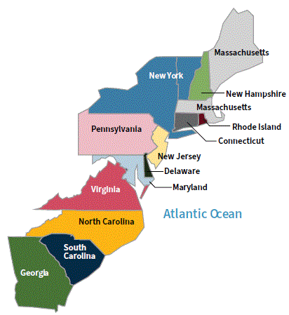
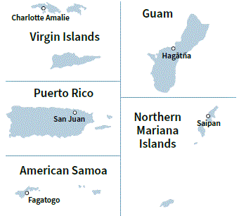
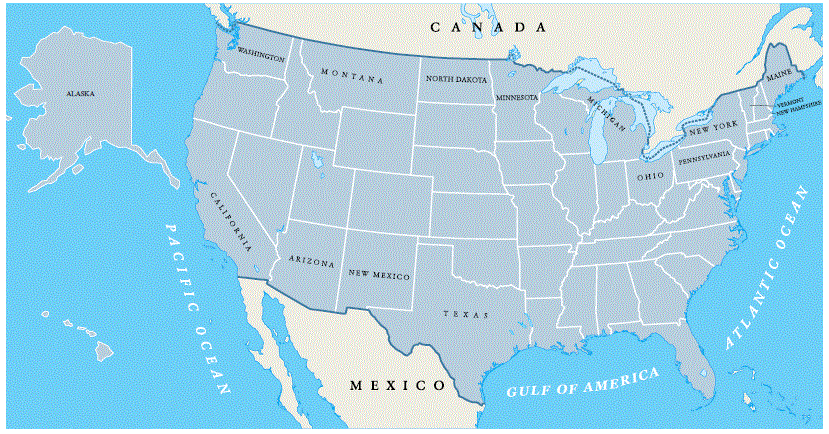
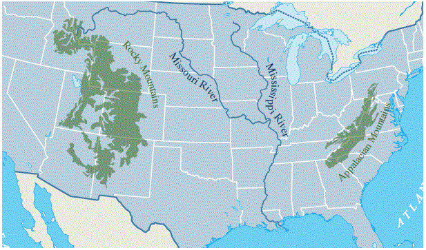
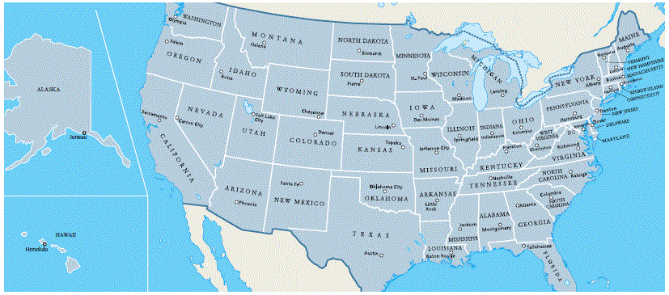

Note: Please know the capital of the United States and the
capital of your state. The territories, boundaries, rivers and oceans
are not a focus of the 2025 citizenship test.
Nota: Por favor, sepa
la capital de los Estados Unidos y la capital de su estado. Los
territorios, las fronteras, los ríos y los océanos no son un tema central
del examen de ciudadanía de 2025.
NOTE: click on red numbers to see related questions from the 2025 citizenship test.
NOTA: haga clic en los números rojos para ver las preguntas relacionadas del examen de ciudadanía de 2025.
In this chapter, you will learn about:
En este capítulo, aprenderá sobre:


When the U.S. first became a country in 1776 there were 13 original states. All of the 13 original states are located on the East Coast of the United States.
Today, the U.S. has 50 states. This is why the American flag has 50 stars. There is one star for each state.
On August 21, 1959, Hawaii became the 50th state to join the United States.
The U.S. also has five territories. A U.S. territory is an area that is part of the United States, but a territory is not a state.
Cuando Estados Unidos se convirtió por primera vez en un país en 1776, había 13 estados originales. Todos los 13 estados originales están ubicados en la Costa Este de los Estados Unidos.
Hoy en día, Estados Unidos tiene 50 estados. Por esto la bandera estadounidense tiene 50 estrellas. Hay una estrella por cada estado.
El 21 de agosto de 1959, Hawái se convirtió en el estado número 50 en unirse a los Estados Unidos.
Estados Unidos también tiene cinco territorios. Un territorio estadounidense es un área que es parte de los Estados Unidos, pero un territorio no es un estado.
The 13 original states are:[q81]
[Map showing the 13 original states on the East Coast]
Los 13 estados originales son:
[Mapa mostrando los 13 estados originales en la Costa Este]
The five U.S. territories are:
[Map showing the 50 U.S. states, Washington, D.C., and the 5 U.S. territories, with Canada and Mexico]
[Image: There are 50 stars in the American flag for the 50 U.S. states]
Los cinco territorios de Estados Unidos son:
[Mapa mostrando los 50 estados de Estados Unidos, Washington, D.C., y los 5 territorios de Estados Unidos, con Canadá y México]
[Imagen: Hay 50 estrellas en la bandera estadounidense por los 50 estados de Estados Unidos]

The United States is located in North America, and it is bordered by an ocean on the East Coast and the West Coast.
The ocean on the West Coast of the United States is called the Pacific Ocean.
The ocean on the East Coast of the United States is called the Atlantic Ocean.
The U.S. is also bordered by one country to the north and another country to the south. The country that borders the U.S. to the north is called Canada. There are 13 states in the U.S. that border Canada.
[Map showing the 50 U.S. states and Washington, D.C., with Canada and Mexico]
Los Estados Unidos están ubicados en América del Norte, y están bordeados por un océano en la Costa Este y la Costa Oeste.
El océano en la Costa Oeste de los Estados Unidos se llama el Océano Pacífico.
El océano en la Costa Este de los Estados Unidos se llama el Océano Atlántico.
Estados Unidos también está bordeado por un país al norte y otro país al sur. El país que bordea a Estados Unidos al norte se llama Canadá. Hay 13 estados en Estados Unidos que bordean Canadá.
[Mapa mostrando los 50 estados de Estados Unidos y Washington, D.C., con Canadá y México]
The states that border Canada are:
Los estados que bordean Canadá son:
The country that borders the U.S. to the south is called Mexico. There are four states in the U.S. that border Mexico.
The states that border Mexico are:
El país que bordea a Estados Unidos al sur se llama México. Hay cuatro estados en Estados Unidos que bordean México.
Los estados que bordean México son:

There are two large mountain ranges in the United States. The Appalachian Mountains are in the eastern United States, and the Rocky Mountains are in the western United States.
There are also many rivers in the United States. The two longest rivers in the U.S. are the Mississippi River and the Missouri River. The Mississippi River runs north to south, and it is located in the middle of the country. The Missouri River connects to the Mississippi River, and it runs across several states in the West.
[Map showing the Appalachian Mountains and Rocky Mountains]
[Map showing the two longest rivers, the Mississippi River and the Missouri River]
Hay dos grandes cadenas montañosas en los Estados Unidos. Las Montañas Apalaches están en el este de los Estados Unidos, y las Montañas Rocosas están en el oeste de los Estados Unidos.
También hay muchos ríos en los Estados Unidos. Los dos ríos más largos en Estados Unidos son el Río Mississippi y el Río Missouri. El Río Mississippi corre de norte a sur, y está ubicado en el medio del país. El Río Missouri se conecta al Río Mississippi, y corre a través de varios estados en el Oeste.
[Mapa mostrando las Montañas Apalaches y las Montañas Rocosas]
[Mapa mostrando los dos ríos más largos, el Río Mississippi y el Río Missouri]
The capital of the United States is called Washington, D.C.[q119]
Washington, D.C., is named after George Washington. George Washington was the first President of the United States. He is also known as the "Father of Our Country".[q86]
The name of the capital has the letters "D.C." These letters mean "District of Columbia." Washington, D.C., is not part of a state. Washington, D.C., is located between the states of Maryland and Virginia, and it is controlled by the federal government.
Each state in the United States also has a state capital. Use the map below to find the capital of your state.[q62]
Note: See the table at the end of this page to find the capital of your state.
[Map showing the 50 U.S. states and Washington, D.C.]
[Note: Alaska capital is Juneau, Hawaii capital is Honolulu]
La capital de los Estados Unidos se llama Washington, D.C.
Washington, D.C., lleva el nombre de George Washington. George Washington fue el primer Presidente de los Estados Unidos. También es conocido como el "Padre de Nuestro País".
El nombre de la capital tiene las letras "D.C." Estas letras significan "Distrito de Columbia". Washington, D.C., no es parte de un estado. Washington, D.C., está ubicado entre los estados de Maryland y Virginia, y es controlado por el gobierno federal.
Cada estado en los Estados Unidos también tiene una capital estatal. Use el mapa a continuación para encontrar la capital de su estado.
Consulte la tabla al final de esta página para encontrar la capital de su estado.
[Mapa mostrando los 50 estados de Estados Unidos y Washington, D.C.]
[Nota: La capital de Alaska es Juneau, la capital de Hawái es Honolulu]

Note: Look for your state's name in the table to find its capital
city.[q62]
Busca el nombre de tu estado en la tabla para encontrar su
capital.
|
Alabama Montgomery |
Alaska Juneau |
Arizona Phoenix |
Arkansas Little Rock |
California Sacramento |
|
Colorado Denver |
Connecticut Hartford |
Delaware Dover |
Florida Tallahassee |
Georgia Atlanta |
|
Hawaii Honolulu |
Idaho Boise |
Illinois Springfield |
Indiana Indianapolis |
Iowa Des Moines |
|
Kansas Topeka |
Kentucky Frankfort |
Louisiana Baton Rouge |
Maine Augusta |
Maryland Annapolis |
|
Massachusetts Boston |
Michigan Lansing |
Minnesota Saint Paul |
Mississippi Jackson |
Missouri Jefferson City |
|
Montana Helena |
Nebraska Lincoln |
Nevada Carson City |
New Hampshire Concord |
New Jersey Trenton |
|
New Mexico Santa Fe |
New York Albany |
North Carolina Raleigh |
North Dakota Bismarck |
Ohio Columbus |
|
Oklahoma Oklahoma City |
Oregon Salem |
Pennsylvania Harrisburg |
Rhode Island Providence |
South Carolina Columbia |
|
South Dakota Pierre |
Tennessee Nashville |
Texas Austin |
Utah Salt Lake City |
Vermont Montpelier |
|
Virginia Richmond |
Washington Olympia |
West Virginia Charleston |
Wisconsin Madison |
Wyoming Cheyenne |
What is the capital of your state?
There were 13 original states. Name five.
George Washington is famous for many things. Name one. *
What is the capital of the United States?